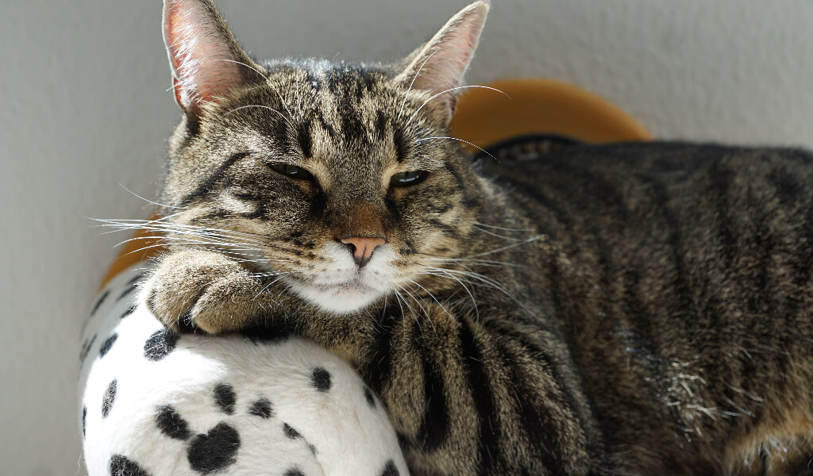
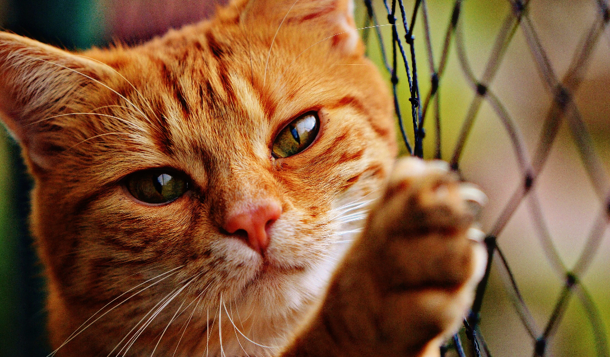

Với không ít người nuôi mèo, việc dạy cho mèo cách đi vệ sinh đúng chỗ là một chuyện không hề dễ, và nếu không chú ý tới vấn đề này ngay từ khi mèo còn nhỏ chúng ta sẽ phải xử lí hậu họa do mèo gây tra, rất vất vả. Thời gian đầu nuôi mèo bạn sẽ cảm thấy khá khó khăn với một số vấn đề của chúng, đặc biệt là việc làm sao để con mèo phải biết đi vệ sinh đúng giờ và đúng chỗ quy định, nếu bạn đang gặp rắc rối với vấn đề này, hãy cùng Gia Đình Pet tìm hiểu kinh nghiệm dạy mèo biết đi vệ sinh đúng chỗ dưới đây nhé.
Chuẩn Bị Nhưng Thứ Sau Cho Mèo Đi vệ Sinh
Trước khi dạy mèo đi vệ sinh đúng chỗ thì các bạn nên biết cách chuẩn bị những vật dụng giúp mèo vệ sinh đúng chỗ hơn nữa phần này cũng hữu ích với các bạn mới nuôi mèo.
Chọn khay vệ sinh có kích thước lớn.
Nguyên nhân phổ biến làm cho mèo không đi vệ sinh đúng chỗ là do khay quá nhỏ. Điều này đặc biệt quan trọng nếu mèo vẫn đang phát triển, một tấm khay có kích thước vừa vặn sẽ trở nên quá chật chội đối với chúng trong vài tháng tới.
Khi mua khay vệ sinh cho mèo, bạn nên chọn loại lớn. Khi đó chúng sẽ cảm thấy rộng rãi thoáng mát và nghĩ rằng khay vẫn còn đủ chỗ để chứa phân và nước tiểu.
Nếu mèo còn nhỏ hoặc đã già, bạn nên chọn loại khay có cạnh thấp để chúng dễ dàng ra vào không gặp trở ngại.
Vậy lựa chọn khay kín hoặc mở
Hai loại này đều có ưu khuyết điểm riêng. Một số mèo thích loại này hơn loại kia, trong khi số khác thì không. Bạn có thể mua cả hai loại để xem chúng thích loại nào.
Ưu điểm lớn nhất của khay vệ sinh kín là sự riêng tư mà mèo thường thích. Việc sử dụng khay kín cũng xua đuổi chó ăn phân trong khay vệ sinh, nếu điều này gây nguy hiểm trong nhà.
Khay vệ sinh kín thường khiến mùi hôi thối luẩn quẩn bên trong, và tình trạng này làm cho mèo càng không thích đi vệ sinh trong khay. Nếu mèo có kích thước lớn, chúng khó có thể xoay người hoặc đào bới trong khay.
Mua ít nhất hai khay vệ sinh.
Nếu nhà bạn đủ diện tích thì nên mua thêm hai hoặc ba khay vệ sinh. Bước này khá cần thiết nếu bạn nuôi nhiều mèo, hoặc trong trường hợp mèo còn nhỏ và đang học cách đi vệ sinh đúng chỗ.
Tuy nhiên, một số chuyên gia khuyến cáo mỗi con mèo cần có một khay riêng, cộng thêm một khay dự phòng nữa đặt trong nhà.
Tìm vị trí thích hợp cho mèo.
Mèo có bản năng tự nhiên là chôn phân và nước tiểu, nhưng nếu không thể tiếp cận khay vệ sinh thì chúng sẽ tìm chỗ khác để giải quyết nỗi buồn.
Việc chọn địa điểm phù hợp sẽ hạn chế xảy ra vấn đề, nhưng nói chung có một số điểm bạn cần lưu ý khi lựa chọn vị trí đặt khay vệ sinh.
Địa điểm cần phải dễ dàng tiếp cận và tiện lợi. Mèo sẽ không muốn phải đi quãng đường xa khi đang cần giải quyết gấp. Vì vậy bạn nên chọn chỗ nào giúp chúng có thể đi vệ sinh ngay khi có nhu cầu.
Không đặt khay vệ sinh gần khay thức ăn và nước uống của mèo. Mèo thường xem chỗ ăn uống là nhà của mình, khi đó chúng sẽ đi vệ sinh xa khu vực này theo bản năng tự nhiên vốn có.
Việc đặt khay vệ sinh gần chỗ sinh hoạt sẽ làm chúng khó chịu và có khuynh hướng giải quyết nhu cầu bên ngoài khay.
Tạo không gian yên tĩnh cho mèo. Đa số loài mèo thường chọn địa điểm vắng người để đi vệ sinh. Nếu bạn đặt khay vệ sinh ở khu vực ồn ào, tập trung nhiều người, phòng giặt giũ hay phòng sinh hoạt gia đình, thì chúng sẽ không sử dụng khay vệ sinh. Cho nên bạn cần di chuyển khay đến khu vực yên tĩnh ít người lui tới nhưng vẫn dễ tìm.
Cách Dạy Mèo Đi Vệ Sinh Đúng Chỗ.
Nhiều bạn mới nuôi mèo thường không hiểu sao và không biết làm cách nào vì mèo đi vệ sinh quá bừa bãi, gây mất vệ sinh.
Đặc biệt, chúng thường chọn những chỗ kín, tối và rất khó dọn để ị bậy. Đơn giản vì đây là bản năng của mèo, chúng không muốn ai nhìn thấy phân của mình.
Cho nên bạn hãy giữ cho mèo tránh xa những khu vực tối hoặc góc khuất trước khi rèn thói quen vệ sinh đúng chỗ nhé.
Dạy mèo con vệ sinh đúng chỗ
Với mèo con, bạn cần phải kiên nhẫn, hãy buộc mèo hoặc nhốt nó cố định vào một chỗ nào đó khuất hoặc tối, gần nhà vệ sinh hoặc sân vườn. Sau đó đặt chậu cát bên cạnh mèo và đảm bảo cát trong chậu dày từ 8 tới 10cm.
Bạn có thể thỉnh thoảng đặt mèo vào chậu cát hoặc để ý khi mèo ăn xong, khi ngủ dậy thì làm như vậy để rèn thói quen vệ sinh cho mèo.
Tránh không nên nhìn mèo khi nó đang đi vệ sinh vì bản năng của nó không muốn người hay bất kỳ loài vật nào nhìn thấy. Cứ duy trì như vậy trong khoảng 1 tuần là bé mèo của bạn sẽ tự biết vệ sinh vào chậu cát.
Đối với mèo trưởng thành
Mèo đã trưởng thành thì đơn giản hơn và bạn cũng có thể áp dụng cách làm như với mèo con. Tuy nhiên vẫn cần lưu ý một vài vấn đề sau:
Thay cát cho mèo thường xuyên và đúng cách. Nếu chậu cát quá bẩn, mèo sẽ không vệ sinh vào đó nữa nên bạn cần lưu ý thay cát thường xuyên. Chậu cát vệ sinh cho mèo phải đặt cố định một chỗ trong tầm mắt của nó.
Tốt nhất, mỗi khi mèo đi vệ sinh xong bạn nên hót phần cát dính bẩn vào túi nilon vứt đi, nhưng nếu không có quá nhiều thời gian thì tối thiểu phải dọn cát 1 lần mỗi ngày để bé mèo không có cảm giác khó ở vì như vậy rất có thể mèo sẽ đi vệ sinh ra ngay bên cạnh chậu cát đấy.

Cách Dạy Mèo Không Đi Vệ Sinh Đúng Chỗ
Nếu mèo chưa được mèo mẹ dạy cách sử dụng khay vệ sinh, bạn cần phải hướng dẫn chúng. Điều này không có nghĩa bạn phải tự mình đi vệ sinh vào trong khay mà là ẵm mèo đặt trong khay tại thời điểm chúng sắp đi vệ sinh, và dạy mèo cách đào bới đất.
Dùng ngón tay cào đất sang hai bên cho đến khi mèo đã hiểu rõ động tác. Nếu chúng đã thải phân vào khay nhưng chưa lấp đất lại, bạn nên dùng ngón tay bốc một ít đất phủ lên chất thải của chúng.
Bước này mất khá nhiều thời gian, nhưng mèo sẽ hiểu được rằng chúng nên làm theo ví dụ này.
Khi làm mẫu cách đào và chôn chất thải cho mèo xem, bạn cần dùng ngón tay của mình.
Nếu bạn nắm lấy bàn chân của chúng và cố gắng chỉ cho mèo cách đào bới và chôn lấp, thì chúng sẽ sợ hãi hoặc khó chịu và có ác cảm với khay vệ sinh.
Bạn nên hết sức kiên nhẫn, và tin tưởng rằng mèo yêu sẽ học được cách sử dụng khay vệ sinh một cách thành thạo.

Không nên la mắng mèo.
Điều quan trọng mà bạn cần ghi nhớ, đó là chúng không cố ý gây rối. Có thể mèo đang mắc bệnh, hoặc bạn cho chúng sử dụng khay vệ sinh hoặc cát gây khó chịu. Hành động quát mắng chỉ làm mèo sợ bạn hơn và cũng không có tác dụng giải quyết vấn đề.
Tạo sự thoải mái cho mèo
Mèo là 1 loài động vật rất sạch sẽ. Chính vì vậy mà chúng không thích đi vệ sinh ở những nơi bẩn thỉu như khay vệ sinh lâu ngày không được dọn dẹp chẳn hạn.
Chúng sẽ tìm 1 nơi sạch sẽ hơn để vệ sinh như trên thảm, ghế sofa… Vậy nên bạn hãy dọn dẹp khay vệ sinh cho chúng hàng ngày nhé.
Khoảng một lần một tuần, bạn cần đổ hết cát bẩn trong khay và vệ sinh sạch sẽ. Sau khi xúc hết đất ra ngoài, bạn dùng chất tẩy rửa không độc hại (hoặc nước xà phòng ấm) để rửa sạch, sau đó xả lại bằng nước và đổ cát mới vào khay.
Nếu mèo con đi bậy ra ngoài khay vệ sinh, bạn cần lau chùi thật sạch sẽ khu vực đó. Như vậy mèo sẽ không đi bậy ở đó nữa.
Mèo thường đi vệ sinh sau khoảng 20 phút sau ăn. Nên việc cho mèo ăn đúng giờ giấc và thường xuyên sẽ giúp bạn dự đoán được thời gian đi vệ sinh của mèo. Khi nhận thấy mèo con đang cần tìm chỗ vệ sinh, bạn có thể đưa chúng đến gần khay.
Bạn có thể đặt 2 khay vệ sinh trong nhà để cho mèo thoải mái đi vệ sinh.
Đây là quá trình đòi hỏi nhiều công sức và thời gian của chủ nhân vì vậy bạn cần kiên trì và thực hiện tuần tự chậm rãi từng bước để đạt hiệu quả cao nhất.